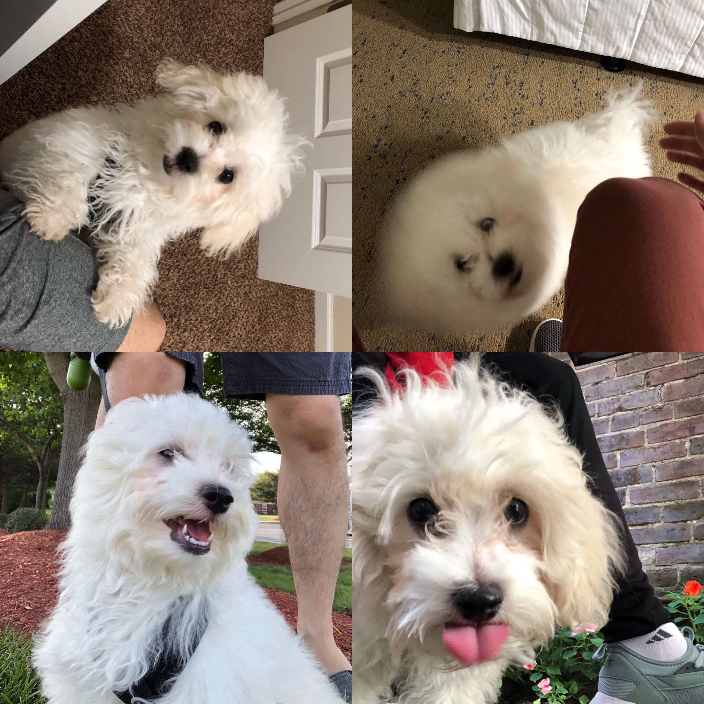

8月，家里喜添新丁——滚滚！之前一期是2019年6、7月刊。
滚滚

顺时针顺序依次是
- 歪头杀滚滚
- 海豹滚滚
- Hear me roar 滚滚
- 爱因斯坦滚滚
就算是撕纸拆家的时候，滚滚也依旧是家里的小天使！
听书
终于走到这一步，8月我把 podcast 里存着的内容基本都听完了，于是就顺势开始听书籍的全文朗读。一些大部头没有太多意愿开始读的书现在也就顺理成章地开始听了，比如：
《穿越百年中东》，把中东大舞台的历史抽丝剥茧娓娓道来，整理得井井有条不紊，对作者印象很不错。
《众病之王：癌症传》，厚重、庄严，书里不仅详尽展示了不同时期的医学思潮，更借助癌症这个线索描绘了政治、文化的时代切面。比如登月成功后一批科学家想要借势要个大funding治愈癌症（当时癌症细胞原理都没搞清楚就想着彻底治愈）；比如60年代女权主义的发展倒逼了医学界对乳腺癌治疗手段在80年后的仔细检验；比如70年代肺癌对香烟产业的深厚影响。这些也是全书最有意味的地方，癌症本身已经分量十足，借助癌症为线索共同展现医学与社会更是回味无穷。
《基因传：众生之源》，同一个作者，前半部分优生学等部分的介绍很新奇，后半部分的内容却渐渐变得稍许平淡。作者已加入必追名单！
《论中国》，基辛格的大作，看完对这些历史人物只能表示，NB，真NB，都NB！
这些都是在微信读书上听的，里头只有有限的一点书提供了全文朗读，那些分一两集给你讲书的就根本没必要听了。中信出版社在这点上做得很棒。我还（再一次）尝试了听听文学书籍，又一次的，我发现还是非虚构社科类题材适合声音输入。微信读书这一波听完之后喜马拉雅还有不少朗读资源呢，都安排上了！
除此之外的影视方面，只有一部《美国工厂》的纪录片有意愿推荐了。工人阶级和资本家之间再怎么争斗，最终恐怕都难敌机器，越来越觉得 Universal Basic Income 是大势所趋了🤔。
□